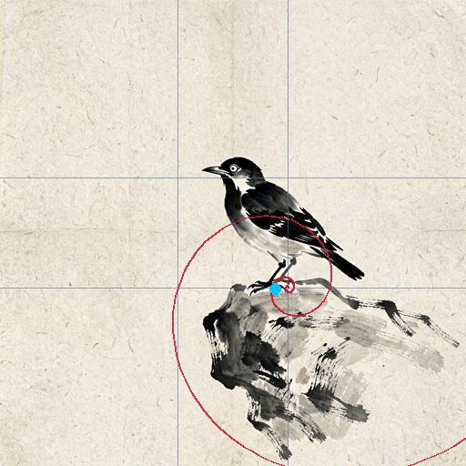
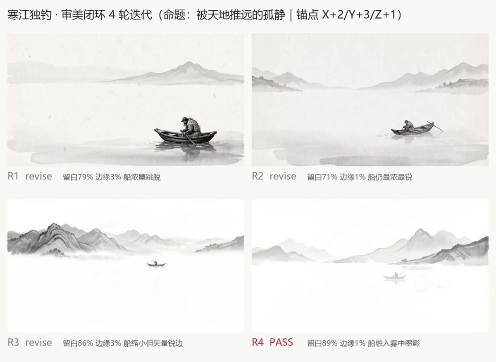
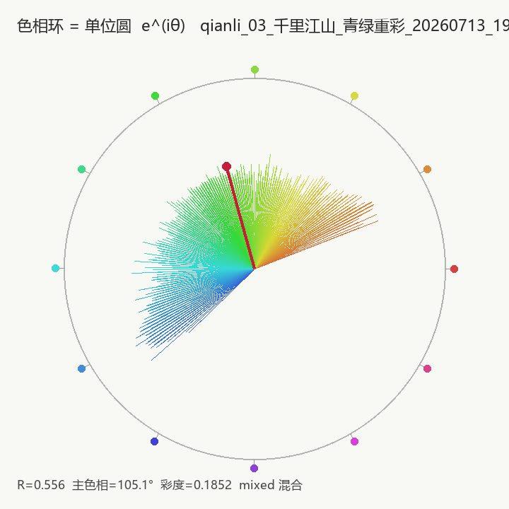
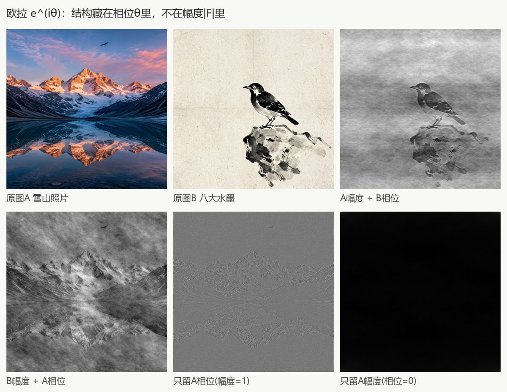
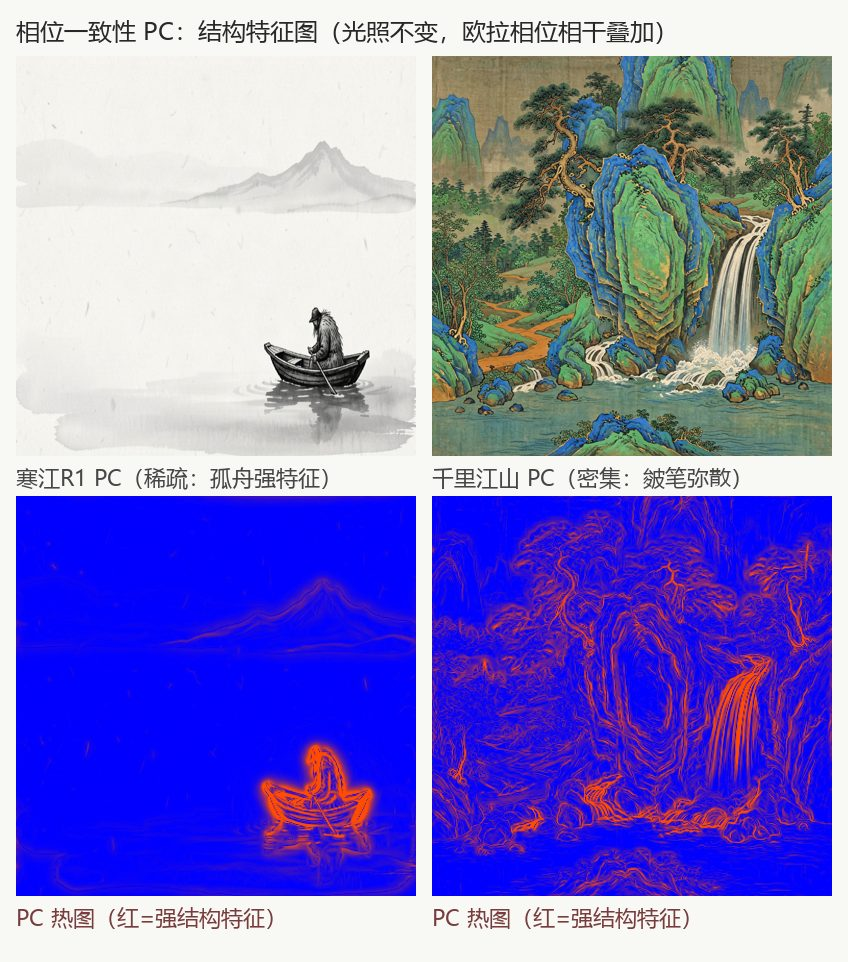

它不出图。
它拒绝假装好看。
一个会拒绝的审美操作系统。动手前定方向，交付前独立验收。不看实际成品，就不许说好看。

spiral · 孤鸟重心距黄金点 0.022
它真的会拒绝。
这不是示意，是 aos.py verdict 的真实输出。缺任何一项证据，接口不产出「通过」这个词。
⛔ 拒绝签发「审美通过」：
- 审美命题（用 propose 写一句）
- 品味简报缺 目的、受众、标志性动作、决策 0/3、非目标 <2
- 成品证据 0 份（需 ≥2，覆盖不同断点或状态）
- 最新成品没有质量审判：测过结构 ≠ 评过质量
- 审美结论理由不足 20 字（现在 19 字）
未签发任何结论。只能说「技术通过，审美暂定」。
三条红线，不是建议。
速度、服从、用户催促、已有投入，都不是例外。说出来「使用 aesthetics-os」却违反任一红线，仍判定失败。
壹
未检查，绝不通过
「技术通过，审美暂定。」没看实际成品，不得声称精致、高级、最终完成。技术验收不能代替审美验收。
贰
两次被拒，绝不换皮
「停。换字体、颜色、特效不算新方向。」先建立新证据和概念距离足够大的检查点，再谈改法。指纹几乎相同，数值会抓住。
叁
宽泛科技词，绝不套模板
「『人工智能感』推不出深色 + 青蓝渐变 + 发光网格。」从任务、信任、信息密度和真实内容反推形式。
给方向，自动产出合格成品。
真实案例「寒江独钓」：命题「被天地推远的孤静」。审判者真实看画面，三次拒绝橡皮图章，直到第四轮孤舟真正融入雾中墨影才放行。审判对照命题意图，不是整体观感。
立项→设计和谐→生成→测结构→判质量→revise 则改→pass 放行

欧拉公式，不是玄学。
e^(iθ) = cosθ + i·sinθ 有几条可严格验证的结构，迁移成可设计、可测量的美学信号。色相就是相位，结构藏在傅里叶相位里，材质自然度有方向熵。每条都标了诚实边界。
palette / hue
色相相位
色相环 = 单位圆。互补 = +π，三角 = ±2π/3。相位旋转推出和谐调色板，写进生成 prompt。

spectrum / pc
傅里叶相位
互换两图相位，构图跟相位供体走（相关 0.626 vs 幅度 0.218）。只留相位结构仍在，只留幅度塌缩。

pc
相位一致性
光照不变的结构特征图。寒江 PC 集中在孤舟，千里江山沿皴笔弥散。

gabor
材质塑料感
方向熵低 + 各向异性高 = 平滑渐变塑料感；方向熵高 = 自然笔意。
aurora 0.696 · 塑料
千里江山 0.995 · 自然
方向熵归一化 0-1，越高笔意越多样
spiral
黄金螺线
PC 权重重心 vs φ 黄金点。偏心主体贴合，居中判合法。参照非裁决。
它抬高下限，
不创造美。
审判是视觉模型的判断，不是客观真值。品味锚点是校准参照，不是美的定义。它保证不合格的不许冒充合格，并逼着迭代到合格。美的源头仍是模型能力与你的品味。把「欧拉赋能万物」当口号，恰恰是它要拦截的宽泛词套模板。
palette · 分裂互补指导生成，R=0.354 互补平衡
装进你的 Agent。
放进技能目录即可。状态存在被设计项目里，跨会话保留。安装后跑自检与回归。
# 克隆到 Agent 技能目录
git clone https://github.com/Greatbeing/aesthetics-os.git <skills-dir>/Aesthetics-OS
# 自检结构与编码，跑回归
python scripts/lint_skill.py .
python scripts/verify_utf8.py .
python scripts/test_aos.py # 35 断言，重点测拒绝路径
python scripts/test_euler_lens.py # 18 断言，欧拉透镜
# 开始一个项目的审美闭环
python scripts/aos.py init --project 我的项目
python scripts/aos.py propose "面向…完成…呈现…通过…"